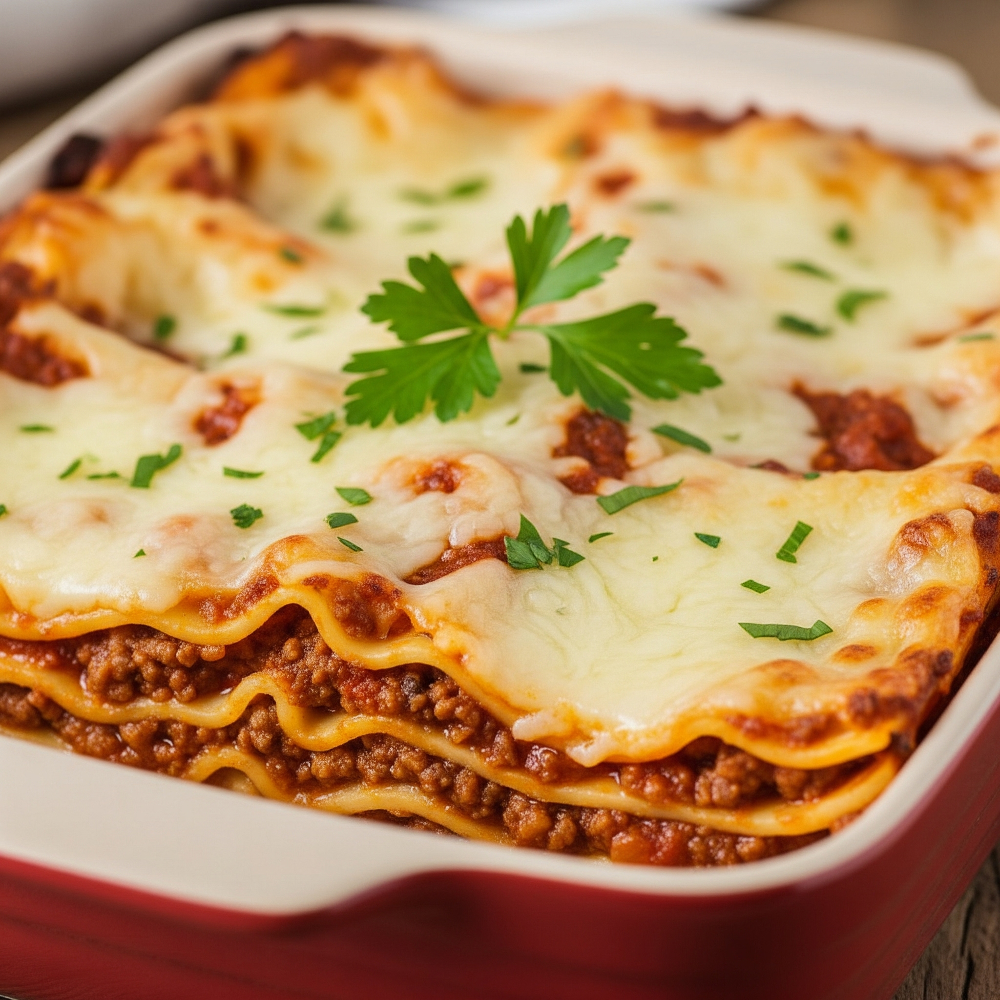

Homemade Lasagna
Home

Description
Homemade lasagna is a classic Italian-American dish made with layers of pasta, a rich meat sauce (often called ragù or bolognese), a creamy cheese filling,
and plenty of shredded cheese, all baked until bubbly and golden brown. It's a comforting and hearty meal, perfect for family dinners or gatherings.
Ingridients
- Lasagna noodles
- Ground beef and/or Italian sausage
- Onion
- Garlic
- Canned crushed tomatoes, tomato sauce, and/or tomato paste
- Ricotta cheese, shredded
- Parmesan cheese, grated
- Egg
- Fresh parsley, chopped
- Olive oil
- Seasonings: salt, black pepper, Italian seasoning, basil, oregano, fennel seeds (optional), red pepper flakes (optional)
Steps
- Make the Meat Sauce
- Prepare the Cheese Filling
- Cook the Lasagna Noodles (if using regular noodles)
- Assemble the Lasagna
- Bake the Lasagna
- Rest and Serve